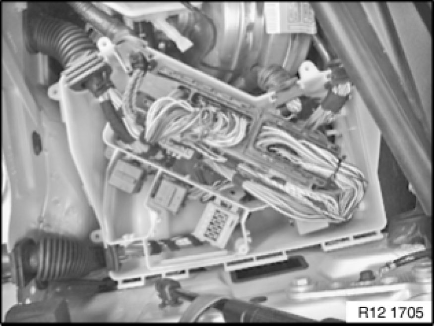
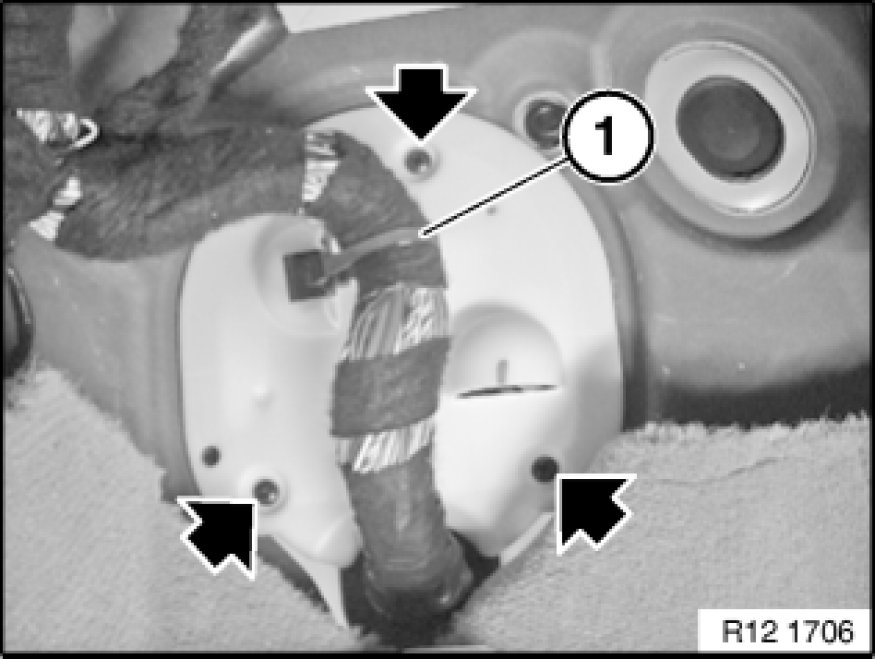
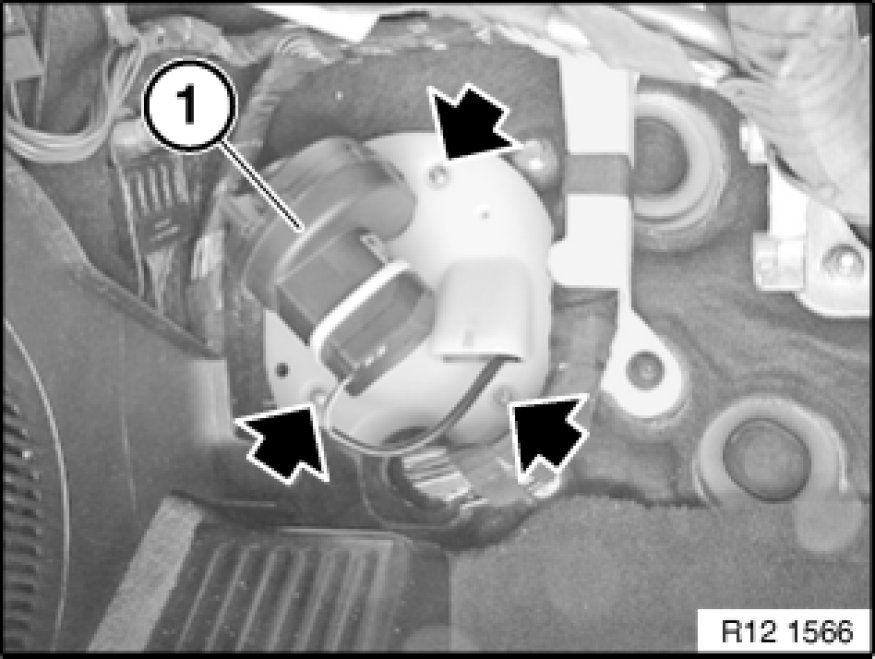
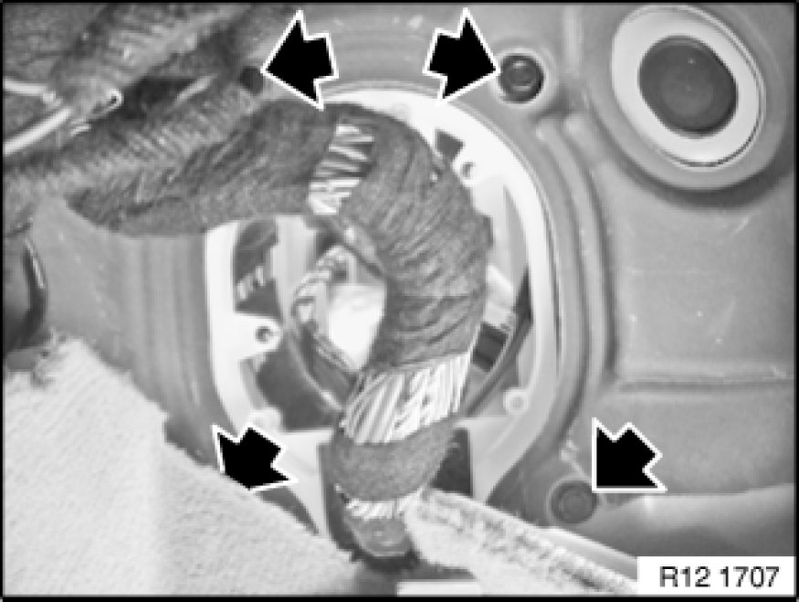

Central Electronics Box: Service and Repair
12 90 ... - Removing and installing/replacing electronics box

Important!
Read and comply with notes on protection against electrostatic damage (ESD protection) 61 35 ... Notes on ESD Protection (Electro Static Discharge).
Note:
Follow instructions for removing and installing electronic control units Service and Repair

Necessary preliminary tasks:
- Read fault memory.
- Disconnect negative battery cable Disconnecting and Connecting Battery Negative Lead
- Remove control unit; for more information, refer to Replacing control unit 12 14 550 Replacing Control Unit (DME)
- Disconnect vehicle wiring harness in engine compartment on left.

Unlock DME control unit and remove.
If fitted, disconnect plug-in contact for electronics box fan.
Unlock equipment carrier at holder and remove.

Cut open cable tie (1). Release screws.
Remove rear plate.

Version with electronics box fan.
Detach cable tie. Release screws.
Remove rear plate with fan.

Release screws for electronics box.
Fourth screw is hidden by carpet.
Add final details to vehicle.
Read fault memory.